Alaska Governors' Wild Ride on Oil Prices
In 2018, prior to the outset of the new Governor Mike Dunleavy administration, I wanted to see how the oil markets had been for each of Alaska’s governors on a relative basis. We were ~four years into cheap oil. I indexed the price of oil (monthly data) to their first day in office and saw who took the elevator up and who rode it down. So I made this plot:
There’s no axis label or anything because I must not have had time for that. Here is the same data in a static image:
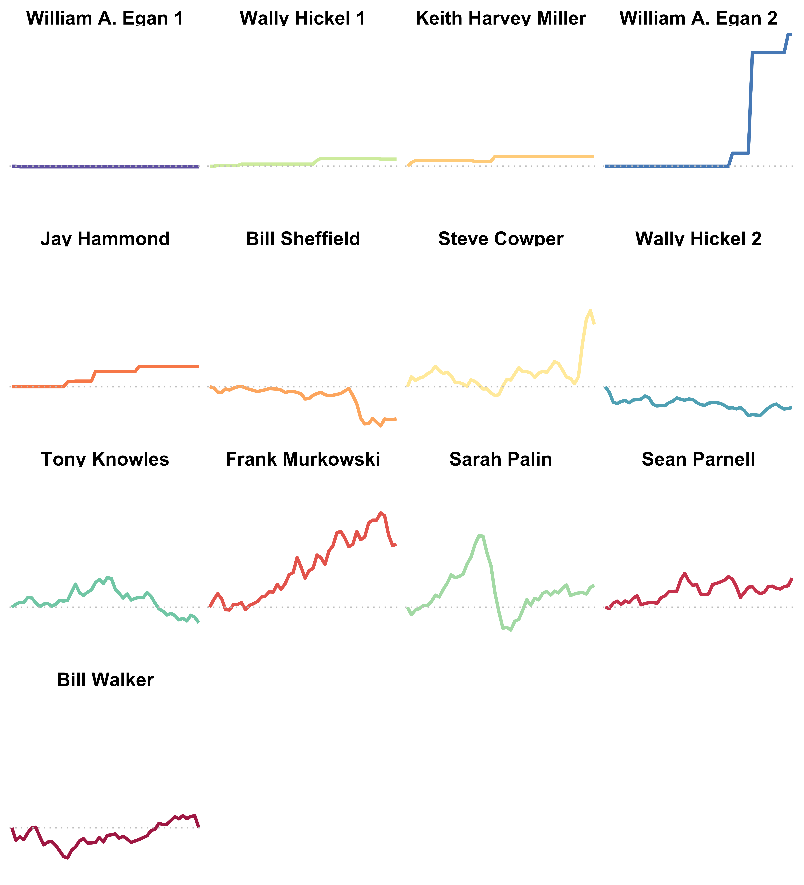
And then on April 20th, 2020, the price of oil cratered and dropped below zero. I knew it was time to revisit this and make a few more excessively animated plots to show that dive to negative prices. (I finished this basically in April 2020, but for many 2020 reasons, I didn’t finish it for real until December and have since updated it many times.)
I pulled prices at a much higher resolution - daily oil prices from the Alaska Department of Revenue and plotted the relative change for each governor from the starting point of the first day in office. Here’s what it looks like for the last five governors:

What this is showing is the evolution of oil prices indexed to each governor’s first day in office. For example, Bill Walker’s prices are measured relative to $69.86, the price when he took office on December 1st, 2014. For Frank Murkowski, oil was at $25.69 on his first day: December 2, 2002 and the chart shows the percent change from that starting point.
While there are many stories to be told over the two decades of governors, legislatures, booms and busts, what sticks out to me is how nice of a ride Parnell had, and what a wild ride Palin had. Walker and Dunleavey have been given the gifts of the shale revolution and years of bad prices. Here’s the same relative oil prices in a static plot.
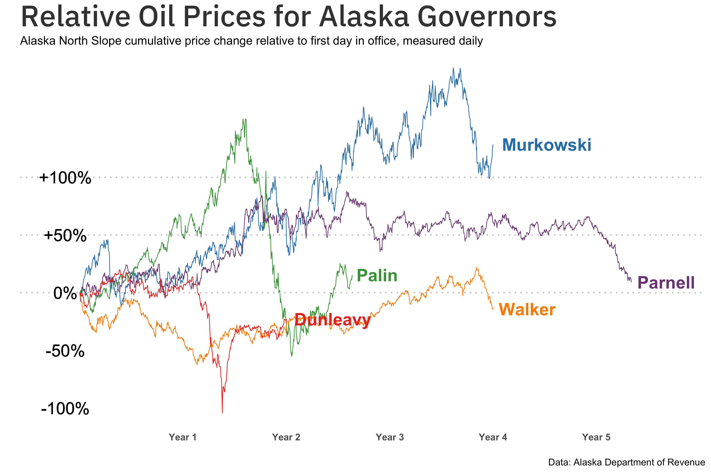
But let’s look more at raw prices.
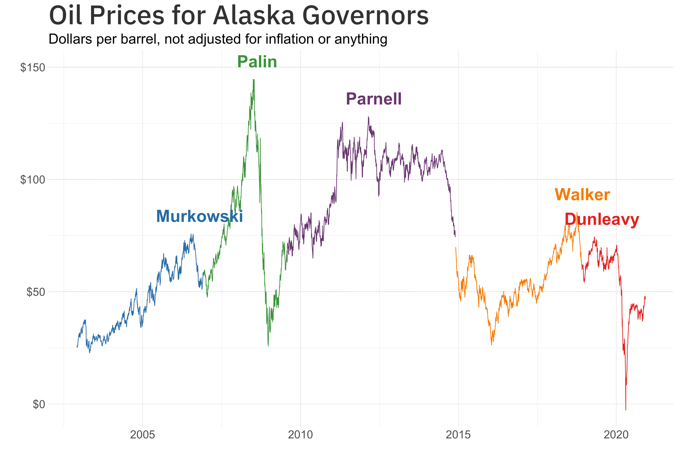
I adjusted for inflation here, setting oil prices equal to 2020 dollars. But I do most of this in nominal dollars; it tells the same story.
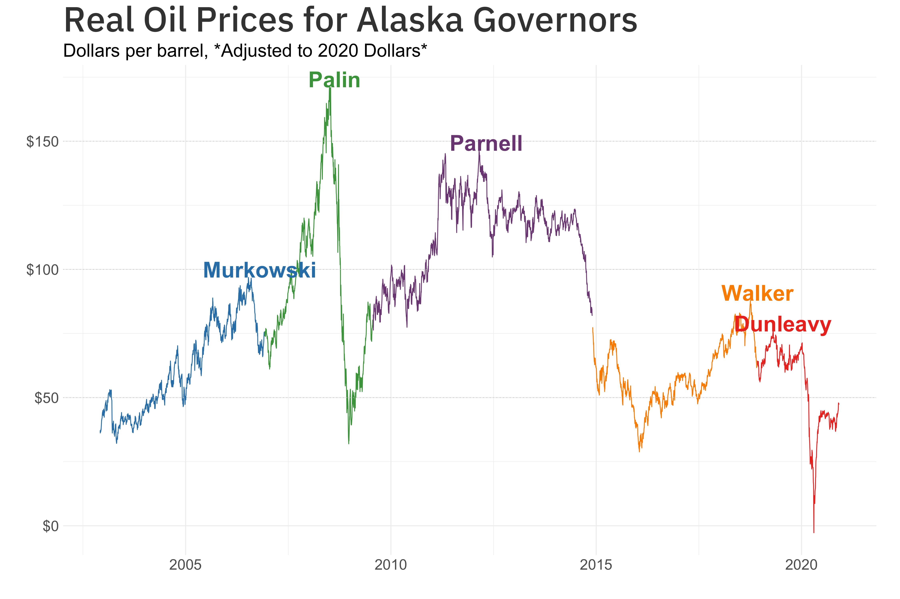
We used to have nice things #
(You can skip this part) It was not many years ago that Alaska funded 90% of the budget with oil taxes. That ended around five years ago when oil tanked thanks to the shale revolution and everything else. The state has since chewed through about $15+ billion in savings (built up during and around the Palin-Parnell years).
By 2018, the state moved to a structured draw of ~5% from the ~$70 billion Alaska Permanent Fund and more fully realized the transition from an oil state to an investment fund state. But oil taxes are still measured in billions and when the price swings, so do the shortfalls that the Alaska Legislature needs to fill or cut away.
This chart from the Alaska Legislative Finance Division shows the huge surge in revenue that Alaska enjoyed from 2007-2014 or so.
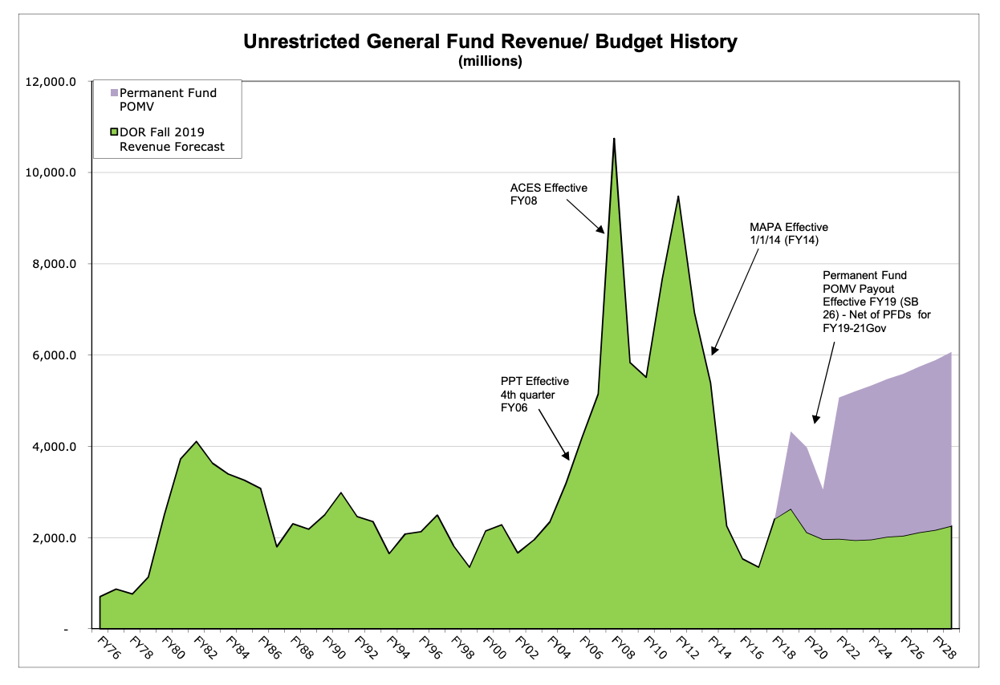
Just look at that $10B in FY2008. Just look at it.
And in the same report, you can see the massive influx and the drastic drawdown on the state’s main non-Permanent Fund savings accounts in the years since the oil price crash. The “new” ACES oil [tax regime] (http://www.tax.alaska.gov/programs/programs/reports/Historical.aspx?60650) was in place from 2007 until the end of 2013. (One story I really want to read in 2021 is what Sarah Palin thinks of her policy’s legacy).
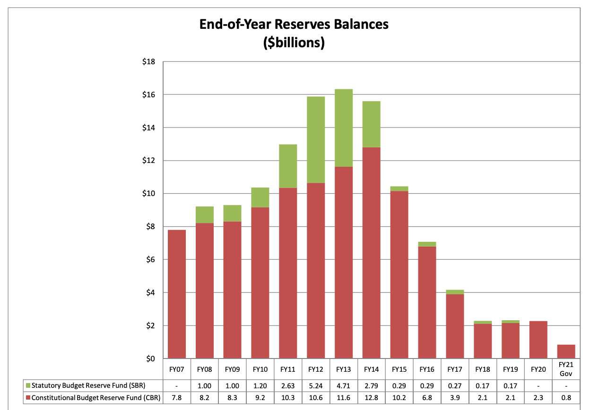
We’re Now Spelling Billion with an M #
The differences in just a few years are staggering. In 2012, the state recieved $8.8 billion in unrestricted oil revenue. For 2022, the Department of Revenue projects $808 million in unrestricted oil tax revenue, a 90% drop over the decade.
My intention is not to judge any governor but rather to illustrate the wild swings in oil prices that essentially determine whether the Governor and Alaska Legislature spend their time building out multi-billion dollar capital budgets or trimming operating budgets to constitutionally-required services. (Note: When I was a public radio reporter during the Parnell years of $100+ oil, I learned that the first thing to do when the Governor’s proposed budget is released each year is to look at the capital budget for cool projects in the local area. That doesn’t really happen now.)
Here is what those price swings look like in nominal dollar terms, no adjustment for inflation.

and the same data in a static plot here:
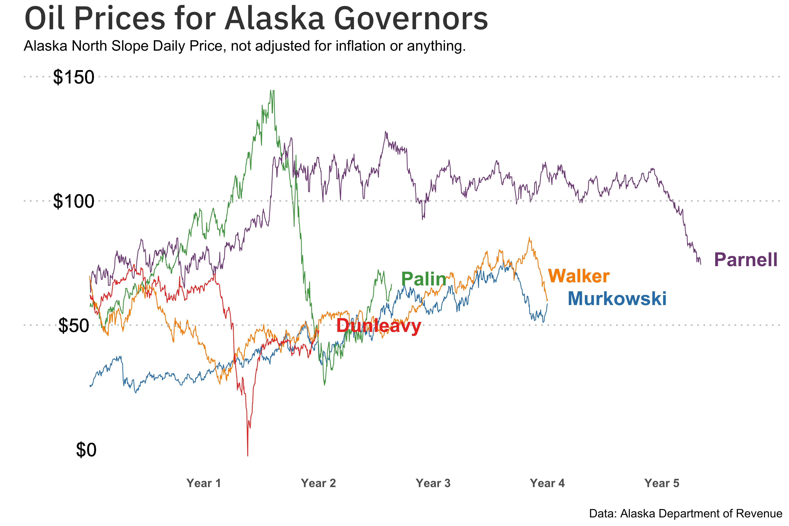
Here is what the average daily price looks like for each Governor.
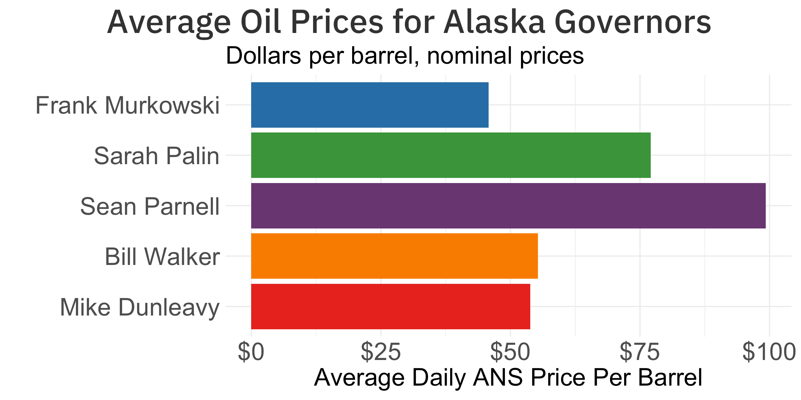
The violin plot below shows the distribution of prices under each governor. (High on the y axis is good: more days at high prices, low is bad. The wider the area, the more days at that price level.) While every governor experienced a ride, Palin’s was among the most volatile. She experienced the highest prices in history ($144.59 on July 3, 2008), before riding the crash down in the 2008 financial crisis. By Christmas, we had $25 oil.
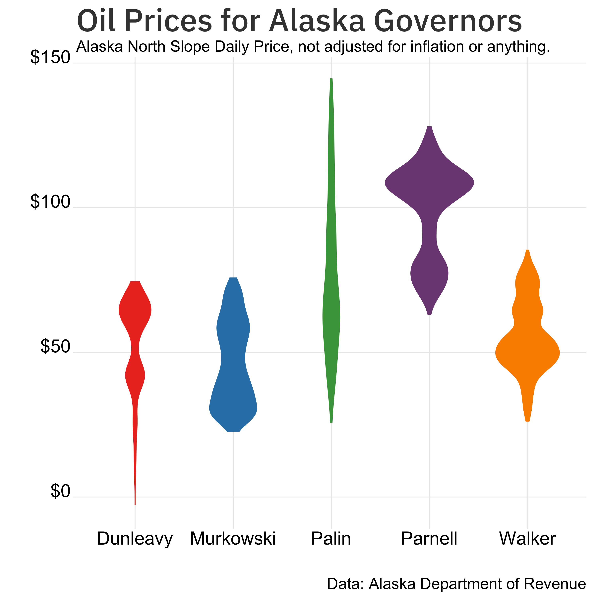
Parnell rarely ever dropped below $75 and had the majority of days above $100. Bill Walker never hit $100 and instead wallowed around $50 and dipping as low as $26. Oil prices under Dunleavy have never reached $75 and dropped below zero on April 20, 2020 before a rebound.
And lest I forget another part of the revenue equation, the aging Alaska North Slope fields as a whole peaked more than 30 years ago and have been on a steady downward (with some stabilization) trend. But in any case, we haven’t seen a day with a million barrels since 2004. (This plot removes the days with less than 400K barrels, which makes for a very noisy plot. But this isn’t a great plot either.)
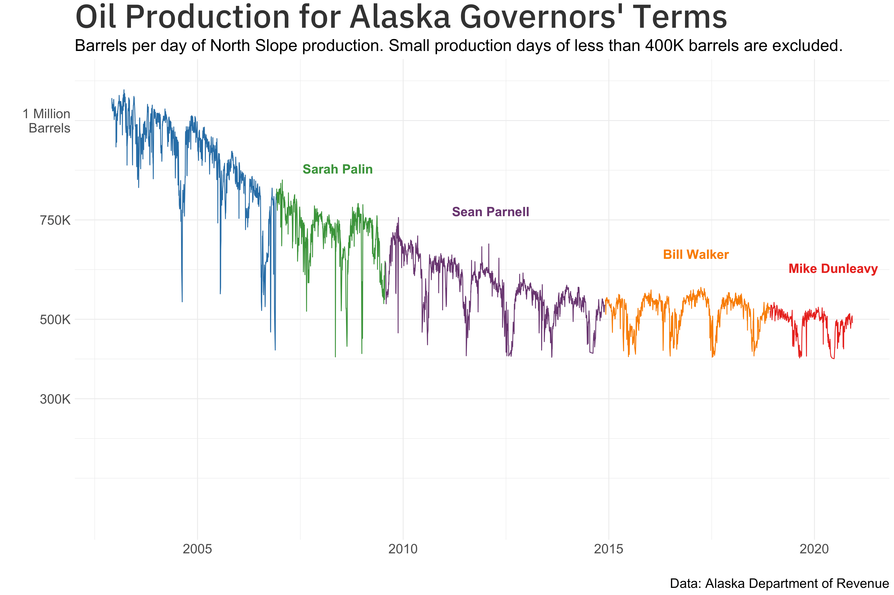
And one bonus chart to finish.
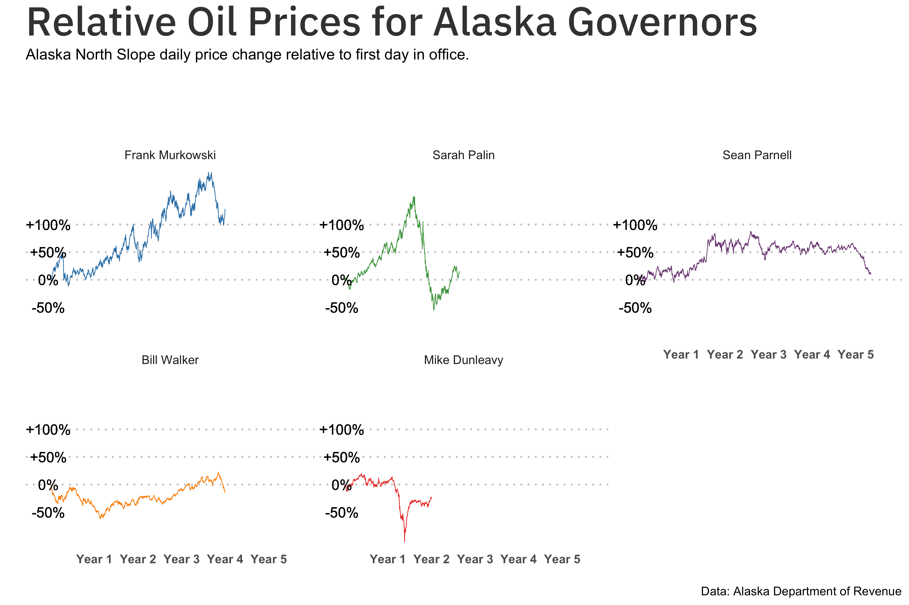
About this #
The data used in this comes from the Alaska Department of Revenue and Wikipedia for the Governor’s first and last days. The inflation adjustment is based on the U.S. Bureau of Labor Statistics Consumer Price Index for All Urban Consumers downloaded [here] (https://fred.stlouisfed.org/series/CPIAUCNS).
The code and raw data are available on this GitHub repo..
Analysis and plots done in R with ggplot2. The animation is powered by gganimate.
In addition to mostly setting aside inflation, I ignored the changing oil tax regimes for this exercise because those are complicated. Also oil tax credits, which are complicated.